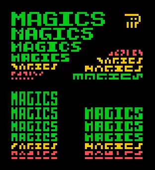
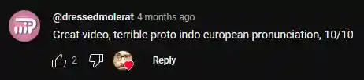
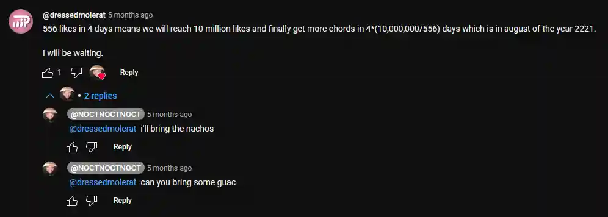
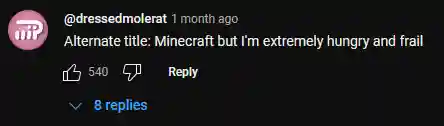

blogs
On several occasions has there been a thought I would like to write down somewhere, and/or tell people about. Therefore I created these two blogs
. One of them is for big thoughts with images and such, and the other is for small tiny plain text thoughts.
2025-8-12: Wait the Legend of Zelda theme starts with the major tonic but it's in minor?? You can do that??
2025-7-27: I just randomly wondered who the Rorschach test is named after and got jumpscared by a hot man.
2025-7-13: What is the best font? It's not possible to choose one font and call it the best
as every typeface has strengths and weaknesses, as well as working well in some contexts but not others. What is the worst font? This
2025-6-28: Yippie τ day! Anyways I'm javascripting and life without list comprehension is horrible!!
2025-6-19: Omg I just found this semi famous artist called Kokia on Spotify and she's so good
2025-6-13: Wait do English speakers (derogatory) voice the s in Oslo?? Why??
2025-5-27: Now that it's almost summer in Sweden it just doesn't get dark anymore here. I wanted to look at stars but they don't show up anymore :(
2025-3-14: You can't just say "Whore Hey" and pretend like that's how it's pronounced
2025-2-7: Just realized I hate the cot-caught merger. It sounds so bad :( what do you mean Jawhn??
I like trying to write legibly (or just prettily) on very small resolutions. There's something about the aesthetics and the fun problem solving that really appeals to me. If we're ignoring the distinction between upper- and lowercase, I believe 3x3 is the smallest legible size per letter for English. M, W, and G don't read well in 3x3, but you can get used to them, especially in context. 3x2 and 2x3 are both too small to fit many important features. There are still enough bits to represent each letter, so it's theoretically possible, but you couldn't read it without first learning the letters.
Here's an experiment I did! I made four categories of letter sizes: x*x, 3*x, x*3, and 4*x. In every size I attempted to write Magics
as legibly as possible (when possible I also aim for aesthetics but that's not the main concern in this case). The text that's readable according to me is colored green, and the illegible text is red. The yellow ones are on the edge of what can be read. The conclusion that can be drawn here is that two pixels isn't enough for width or height. Therefore, 3x3 is still the smallest option.
If you want to be as tiny as possible with your pixel text, I recommend 3x3. If you want to be tiny but more readable, 4x4 or 3x4 are good options. In most cases however, don't limit yourself to monospaced type. The M and W deserve to be bigger, and if you make the I a simple line the text flows much better. Here are two designs, both based on 3x4 and 4x4 letter sizes respectively, but also both with exceptions.
First of all, I think Lague is pronounced [ˈlɛjg], but I'm not sure where I learned that or if I just made it up. What now follows will be my thoughts as I watch through the 50 minute long video Coding Adventure: Software Rasterizer.
5:25 - You can't a==b==c in C#? Ouch should have used python I guess ¯\_(ツ)_/¯
7:36 - Wow I didn't know .obj-files were so pretty!
15:40 - Awwwwwwwwwwwwww!
27:50 - Haha floorless. I think the non-rhotic variant of the cure-force merger is to blame. I also noted this merger in Lague's accent in the chess video, where I constantly heard him say porn instead of pawn.
31:53 - That's a very trippy opical illusion! I've definitely seen this type of illusion before but this example is very clear.
33:12 - Yippie it's time for Sebastian Lague's patented super specific visualization made in Unity that only take up a few seconds of an hour long video!!
34:14 - Ooh this texture mapping is very affine.
41:11 - Very hyperbolica, Code Parade would be proud.
46:58 - We'll want the pilot and passenger and propeller to all be parented to the plane,
bars.
As expected the video was great.
Apparently I don't have notifications on for any sort of comment interactions on youtube. This is why I today decided to check on my recent comments to see how they were doing. First of all, I noticed most of them had zero likes, which makes sense statistically. Second of all, I realized one comment on a vsauce short had a heart from Michael Stevens himself, which I thought was pretty cool, especially considering I couldn't even find another hearted comment on that video.
I also found this old comment on a video with way fewer views, where I calculated when it would reach the like goal of 10 million. Because I don't have notifications on, I never noticed that the creator of the video asked me to bring guac for the party in 2221. Glad I caught this now before the party, or it would have been very awkward.
On this minecraft video, I proposed an alternate title which I myself found very funny. Apparently other people did as well, because I have been liked all the way to the top comment. That's pretty cool, even though there are only 200 something comments.
On most of the comments that have replies, at least one is notifying me about the fact that my profile picture indeed resembles the toki pona logograph for soweli, which I think is really fun, because that means that toki pona people exist outside toki pona communities!
This concludes my first blog post on this website, and I now know that writing satisfying conclusions on short texts is hard. Bye!
Because it is in dire need of a redesign. But anyways here are things I've learned recently:
2025-8-12: TV-tropes originally only categorized tropes in Buffy the Vampire Slayer
2025-8-5: Did any typewriters exist that could print variable-width aka proportional text? Yes :)
2025-8-4: Why is Eiffel pronounced /'ajfel/ in English as if it were German, instead of /e'fel/ or /ej'fel/ as if it were French? Ok it's because the surname is German and English speakers must have already been saying /'ajfel/ before Gustave built that tower so they didn't bother changing to his pronounciation.
2025-8-2: Buckets only stack to 16
2025-7-17: Tycho Brahe died because he held his pee for too long because "etiquette"
2025-7-17: Supernovas are called nova because people Tycho Brahe understandably thought of them as *new* stars
2025-7-28: Did any glitches actually occur because of y2k? Yeah kinda: Several babies were born at 100 years old, a Korean video store sent a fee of 8 million won for a rental which was 100 years overdue, 10% of Greece's receipts said 1900, a kindergarten in Norway offered a spot to a 105 year old woman, a hospital thought 154 women were over 100 years old which put them at risk for having children with Down syndrome which led to two abortions, and the US official standard date was briefly 1 Jan 19100.
2025-7-27: There's a crazy script called Bamum that a king in Cameroon around 1900 made
2025-7-21: There's a fun Unicode block called Symbols for Legacy Computing which includes among others: Stick figure with dress 🯉, left half running man 🮲, and middle third white right pointing index 🯂
2025-7-14: Basically all black and green tea is just one plant
2025-7-11: The inventor of scrabble was named Butts
2025-6-4: The king of hearts is often depicted with his sword in his head and is called the suicide king